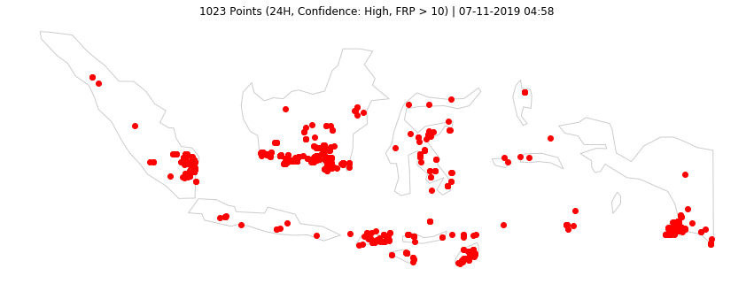
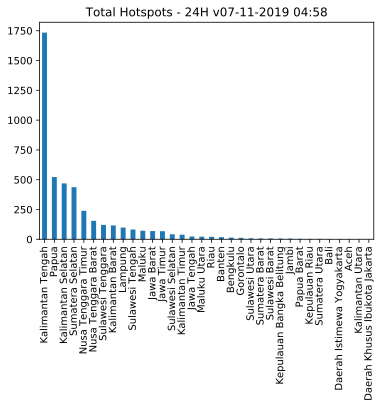
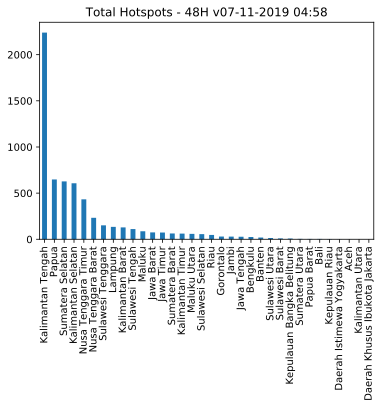

Last updated: 07-11-2019 04:58
Data VIIRS (NASA FIRMS)
Titik Api @Indonesia
4529 (24H) | 6174 (48H) | 12219 (7D)
Olah Data dan Visualisasi Sebaran Titik Api di Indonesia.
Acq. Date: 05-11-2019 11:30 -- 07-11-2019 01:42 WIB (24H) | 04-11-2019 10:12 -- 07-11-2019 01:42 WIB (48H) | 30-10-2019 11:42 -- 07-11-2019 01:42 WIB (7D)
Home Top 3 GitHub Sumatera Kalimantan Sulawesi Maluku & Papua Jawa Bali & NT

Data 24H
| Kategori | #Titik |
|---|---|
| Confidence High | 151 |
| Confidence Nominal | 4185 |
| Confidence Low | 193 |
| Total | 4529 |
| Confidence High or FRP>10 | 1023 |
Data 48H
| Kategori | #Titik |
|---|---|
| Confidence High | 230 |
| Confidence Nominal | 5681 |
| Confidence Low | 263 |
| Total | 6174 |
| Confidence High or FRP>10 | 1311 |
Data 24H
| # | Provinsi | Total | H | N | L | HFRP10 |
|---|---|---|---|---|---|---|
| 1 | Kalimantan Tengah | 1734 | 43 | 1651 | 40 | 426 |
| 2 | Papua | 522 | 8 | 488 | 26 | 164 |
| 3 | Kalimantan Selatan | 469 | 12 | 449 | 8 | 99 |
| 4 | Sumatera Selatan | 437 | 4 | 421 | 12 | 87 |
| 5 | Nusa Tenggara Timur | 239 | 29 | 209 | 1 | 55 |
| 6 | Nusa Tenggara Barat | 155 | 12 | 141 | 2 | 43 |
| 7 | Sulawesi Tenggara | 121 | 10 | 111 | 0 | 26 |
| 8 | Kalimantan Barat | 116 | 3 | 101 | 12 | 32 |
| 9 | Lampung | 98 | 1 | 95 | 2 | 13 |
| 10 | Sulawesi Tengah | 82 | 11 | 70 | 1 | 18 |
Data 48H
| # | Provinsi | Total | H | N | L | HFRP10 |
|---|---|---|---|---|---|---|
| 1 | Kalimantan Tengah | 2239 | 77 | 2114 | 48 | 517 |
| 2 | Papua | 648 | 24 | 596 | 28 | 185 |
| 3 | Sumatera Selatan | 627 | 7 | 605 | 15 | 131 |
| 4 | Kalimantan Selatan | 607 | 12 | 586 | 9 | 103 |
| 5 | Nusa Tenggara Timur | 433 | 35 | 358 | 40 | 102 |
| 6 | Nusa Tenggara Barat | 233 | 26 | 204 | 3 | 67 |
| 7 | Sulawesi Tenggara | 151 | 10 | 140 | 1 | 30 |
| 8 | Lampung | 135 | 1 | 131 | 3 | 13 |
| 9 | Kalimantan Barat | 129 | 4 | 113 | 12 | 39 |
| 10 | Sulawesi Tengah | 111 | 11 | 97 | 3 | 23 |
Data 24H

Data 48H
